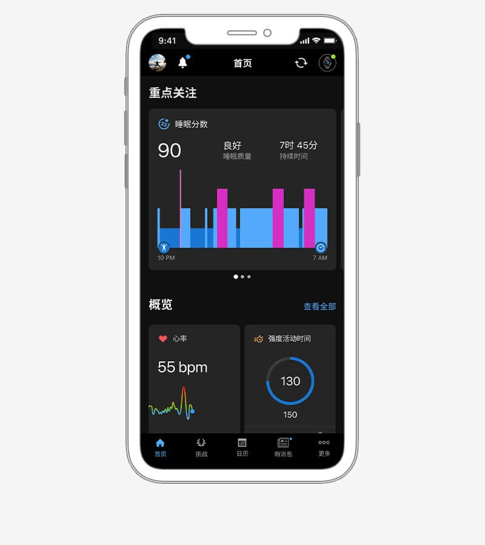
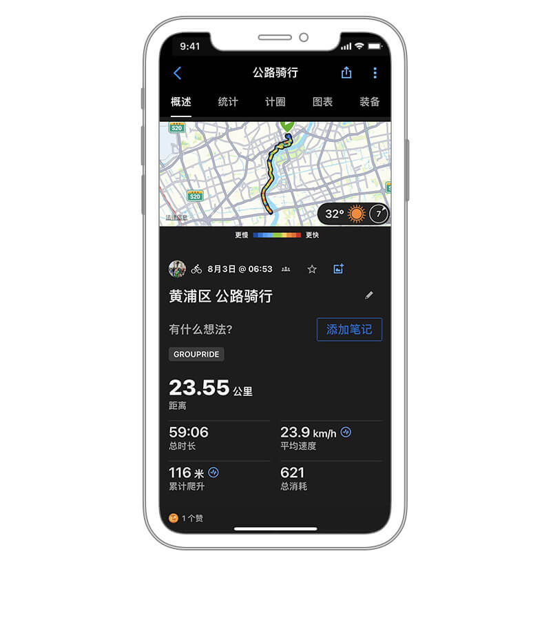

半马后垮了两周：我靠 Garmin Connect 从瞎练回到正轨
半马赛后心率飘、静息心率高、跑步提不起劲，凭感觉瞎练了两周直到跑团朋友甩来一个App。用训练状态、HRV 状态和训练效果评分把自己拉出劳损，才发现数据比体感诚实得多。
半马赛后第三天，我醒来摸了摸手腕——静息心率 68。
之前备赛那三个月，这个数一直稳稳停在 54 到 58 之间。我盯着手机上那个跳动的数字，心里发毛：上次跑完半马可不是这德行，那年跑完全程第二天还能轻松蹭个十公里。这次怎么回事？
接下来的事更离谱。我硬撑着出门慢跑，配速比平时慢了三十秒，心率却飘得老高，跑到第三公里就停下来大口喘气。戴了三年的运动手表第一次给我弹出一个红色警告框——训练状态：劳损（Strained）。我盯着屏幕上那两个英文单词看了好一会儿，然后关掉，继续硬着头皮跑。
这是我犯的第一个错误：我以为自己只是累了，休息两天就好。
被数据打脸
那两周我过得很拧巴。明明感觉身体没恢复好，我还是按备赛期的节奏出门跑，生怕停一天就把刚攒起来的体能掉回去。跑团约局我去了五公里，别人轻松五分配，我全程只能压六分半；间歇课上我冲了两组四百米，心率直接顶到 185，手表在手腕上嗡嗡震——我把震动关了继续冲。
直到群里老张甩给我一个截图："你这静息心率连着一周 60+ 了吧？别瞎跑了，去Garmin Connect官网看看训练状态。"
我之前只用手表记数据，官方下载到手后 App 常年躺在后台吃灰。那天晚上我打开它，首页一整排指标扫过来——
训练状态：劳损。HRV 状态：不平衡。训练负荷趋势图像一条爬了三周的山，峰顶正好就是半马那天，之后一路陡降但还在警戒区上方。耐力得分比备赛期的最高点掉了 7 分。
我点进训练状态的详情页，看到官方对"劳损"的解释：负荷过高或持续爬升，身体跟不上，应安排休息或减量。"应安排"——这词我在备赛期也见过，那时候我理直气壮地把手表调成了省电模式继续跑。但这次不一样，我已经垮了。

原来我一直在白练
最戳我的不是劳损那两个字，是训练效果的评分。
App 给每次活动都打两个分：有氧训练效果和无氧训练效果，都是 0 到 5.0 的刻度。我翻了翻那两周的记录——间歇课的无氧效果清一色 1.2、1.4，偶尔有一次冲到 2.0 我还沾沾自喜，以为那就是强度到位了。后来去Garmin Connect文档翻了一下才弄明白：轻松跑常年 0 分正常，但间歇课、变速跑才应该给出 2 到 3 分以上。我那堆 1 分出头的间歇课，等于是在以间歇配速跑轻松跑，强度根本没捅破阈值。
我又往前翻了半年的训练记录，发现一件更扎心的事：备赛期的长距离跑，有氧效果大多在 2.8 到 3.2 之间，偶尔节奏跑能摸到 3.8。那时候我以为自己练得不错，现在才看明白——Connect 把 3.0 到 3.9 定义为"提升有氧能力"，4.0 到 5.0 是"大幅提升"。我大部分长距离都卡在 2 分档，也就是"维持有氧能力"。
换句话说，我在备赛期跑了几百公里，其实大部分是在原地踏步。
第一次相信数据
看完这些我把 App 锁屏扔到一边，躺了十分钟没动。
然后我做了一件三年来从没做过的事：完全按 Connect 的建议排了一周训练。
第一天完全休息。第二天三十分钟轻松跑，配速压到 7 分半，心率控制在最大心率的 60% 以内——手表的训练效果最终给出 0.9 有氧、0.0 无氧。要是搁以前我会觉得这课白跑了，现在我知道这是恢复性活动，该的。
第三天 Connect 提示"训练准备度较低"，我又歇了一天。第四天它建议上一节低强度有氧课，我照着跑，心率没超过 145，有氧效果 2.1，无氧 0.3。这是两周来我第一次跑完不觉得累，倒有一种"终于没往伤口上撒盐"的踏实。
一周后我再打开 App——训练状态变成了高效（Productive）。HRV 状态从"不平衡"回到了"平衡"。静息心率降回 57。耐力得分涨了 3 分。
那天晚上我在跑步机上试了一组六百米间歇，配速稳定在 5 分 10 秒，心率到 178 就稳住了，没像之前那样一冲就顶到 185 以上。训练效果给了 2.7 的无氧分——终于到线了。

数据不是玄学
我现在每周一早上做一件事：打开 Garmin Connect，看一眼上周的训练状态和 HRV 状态。
"高效"就继续按计划走；"劳损"立刻减量，不管当天天气多好、群里约局的人多热闹；"维持"就想想这周是不是该加点强度、换个课型；"巅峰"——这个状态我只在赛前减量期见过一次，那时候我把半马定在训练状态最好的那天，果然比训练配速快了二十秒完赛。
至于比赛预测那一排预估时间，我现在只拿它当配速策略的上限参考，绝不把那个半马 1 小时 32 分的数字当承诺。Connect 自己也写了：中短距离预测更准，全马偏乐观，因为它算不准长距离后程的燃料和肌肉疲劳。
跑了四年，我终于承认一件事：身体的体感会骗你。累的时候它说"再来一圈没事"，其实你已经在透支；状态好的时候它让你以为自己回到巅峰，其实只是一次偶然的好天气。数据不会骗你——训练效果的 1.2 分就是白练了，静息心率 68 就是没恢复好，HRV 不平衡就是身体扛不住了。
这套资料在 GitHub 上维护得很及时，Gitee 同步了国内可访问的备份，GitCode 那边也镜像了一份，每一份都跟 App 内的说明对得上。